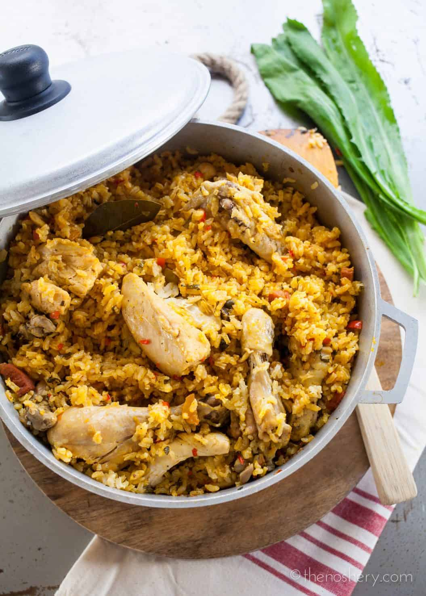

Arroz con Pollo

Description
A traditional, Puerto Rican style meal made with seasoned chicken and rice. This is my take
on one of my favorite family dishes. The added chorizo and olives add a fun, salty surprise.
Ingredients
- rice
- gandules
- chicken (i prefer thighs but you can use drums)
- red pepper
- white onion
- green pepper
- garlic
- cilantro
- culantro
- olives
- chorizo
- sazon
- chicken bouillon
- adobo con complete (optional)
Steps
- prepare the broth. i prefer to add the chicken to a pressure cooker with the bouillon.
you can also boil the chicken in a pot. the pressure cooker method is faster.
- once the chicken has cooked you can set it aside. if you did not choose boneless thighs,
you can easily separate the bone from the meat. toss the bones. keep the meat. set aside
the broth for later as well.
- while the broth is cooking, prepare the sofrito and set aside. my preferred method of
preparation is to add the red pepper, white onion, green pepper, garlic, cilantro, and
culantro to a food processor and blend together. you can also chop everything down to
your preferred size instead.
- cut the chorizo into small pieces and add to a room temperature pot
- turn the stove on low-medium heat and allow the fat to render from the chorizo. cook
chorizo to preferred crispness. I prefer just a light golden brown layer of crispiness.
- remove the chorizo from the pan. add the sofrito to the chorizo oil. fry lightly until
fragrant. add the gandules, sazon, and optional adobe. cook for a few minuten then stir
in the chicken.
- add the rice, broth, and olives. stir and allow everything to come to a boil
- cover the pot and lower the temperature to simmer
- set a timer for 20 minutes
- do NOT -i repeat- do NOT lift the lid at any point. resist all tempation to stir
- once the 20 minutes has elapsed remove the pot from the heat and allow to sit for 10
minutes
- remove the lid and behold the glory that is arroz con pollo. you may now stir to fluff
up the rice.